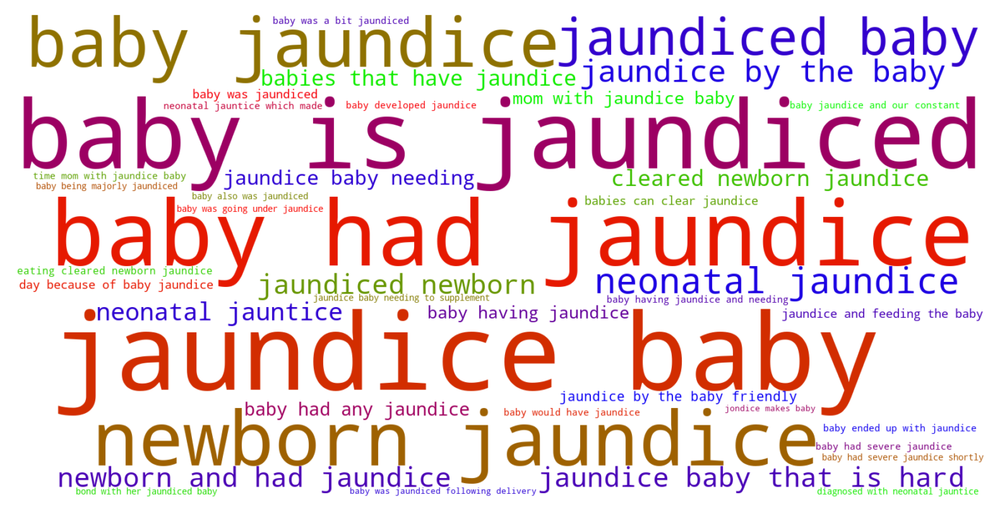

Jump to section:
Samples from Social CorpusHits per UMLS Alias on Social Corpus
Word Cloud Comparison
Embedding Space Comparison
Nearest Neighbors by Semantic Type
Related Analysed Concepts
Samples from Social Corpus
( Except for when he was a newborn and had jaundice - then we supplemented and woke him up for feeds for a week until we were cleared by our doctor ) .
Confidence: 0.839. Reddit link
The clothes and toiletries came in very handy when the baby had jaundice and had to stay an extra day ( the bili light suppliers in our area were sold out ) .
Confidence: 0.807. Reddit link
Eating and pooping out bilirubin is how babies can clear jaundice , light helps it breakdown .
Confidence: 0.723. Reddit link
I was in the hospital for 4 days post birth , exhausted and with a jaundice baby needing to supplement with formula .
Confidence: 0.637. Reddit link
My baby also was jaundiced , so we were waking up in the morning , taking her to get blood drawn and then in the afternoon the pediatrician .
Confidence: 0.636. Reddit link
With a jaundice baby you have to feel them stat to help them pass the bilirubin from their system .
Confidence: 1.000. Reddit link
Because my husband and I have different blood types there was a high chance that our baby would have jaundice if his blood type was different than mine .
Confidence: 0.679. Reddit link
TW : arguably traumatic , although I prefer " Triumph of Medical Science " ** TL ; DR : Went into labor naturally around due date , drove to hospital for medicated vaginal birth , All The Things happened -- pre-eclampsia , failed epidural , fetal heart-rate decelerations , postpartum hemorrhage , neonatal jaundice -- son finally delivered via urgent c-section .
Confidence: 1.000. Reddit link
It was surreal but actually I didn't feel lonely , we were so absorbed with worrying about the jaundice and feeding the baby .
Confidence: 0.726. Reddit link
My medications struggled to be regulated and my baby ended up with jaundice .
Confidence: 0.641. Reddit link
Hits per UMLS Alias on Social Corpus
-
baby jaundice
29 hits
-
jaundice baby
10 hits
-
neonatal jaundice
4 hits
-
newborn jaundice
4 hits
-
jaundice newborn
2 hits
-
babies jaundice
2 hits
-
infant jaundice
0 hits
-
neonatal jaundice nos
0 hits
-
physiologic jaundice newborn
0 hits
-
icterus neonatorum
0 hits
-
jaundice neonatal
0 hits
-
jaundice infant
0 hits
-
neonatal jaundice disorder
0 hits
-
jaundice newborns
0 hits
-
babys jaundice
0 hits
-
jaundice newborn physiologic
0 hits
-
infants jaundice
0 hits
Word Cloud Comparison
Keywords matching C0022353
Keywords matched against concept. Word size represents frequency.
Keywords co-occurring with C0022353
Co-occurrence is measured at the document-level (i.e. Reddit submissions). Frequencies are normalized to account for keywords common to all CUIs.
Embedding Space Comparison
T-SNE comparison for word embeddings learned from medical domain (EuroPMC) and social media (Reddit) independently.
Pearson correlation for union of closest 1000 neighbors: 0.113
Nearest Neighbors by Semantic Type
Most similar concepts in each of the selected UMLS semantic types. Based on concept embeddings from social corpus.
T047 (Disease or Syndrome)
-
C0022353
Baby jaundice
1.000 Similarity
-
C1566050
Severe jaundice neonate
0.913 Similarity
-
C3502107
Breastfeeding jaundice
0.818 Similarity
-
C0159020
Fits newborn
0.635 Similarity
-
C1135365
Apnea newborn sleep
0.605 Similarity
-
C0020615
Low blood sugar
0.590 Similarity
-
C0025048
Mas
0.575 Similarity
-
C0036690
Sepsis
0.564 Similarity
T184 (Sign or Symptom)
-
C0022346
Jaundice
0.934 Similarity
-
C0270274
Vomiting newborn
0.582 Similarity
-
C0410925
Overfeeding newborn
0.559 Similarity
-
C0476273
Respiratory distress
0.552 Similarity
-
C0242706
Oxygen stress breathing
0.550 Similarity
-
C0003578
Apnea
0.544 Similarity
-
C0558161
Pain breastfeeding
0.534 Similarity
-
C0015967
Fever
0.529 Similarity
T046 (Pathologic Function)
-
C0270215
Breast milk jaundice
0.849 Similarity
-
C0549631
Newborn distress
0.654 Similarity
-
C4075684
Hypoxemia during surgery
0.590 Similarity
-
C0152158
Not producing any milk
0.584 Similarity
-
C0242184
Decreased oxygen supply
0.567 Similarity
-
C0034063
Pulmonary edema
0.563 Similarity
-
C0241742
Bleeding wound
0.551 Similarity
-
C0032797
Postpartum hemorrhage
0.550 Similarity
T074 (Medical Device)
-
C0182262
Bilirubin lights
0.809 Similarity
-
C0785105
Bilirubin test
0.772 Similarity
-
C0462877
Oxygen giving set
0.599 Similarity
-
C2945625
Feedings tube
0.582 Similarity
-
C3696780
Tube oxygen
0.554 Similarity
-
C0030067
Oxygenator
0.545 Similarity
-
C2317149
Feeding pump
0.520 Similarity
-
C3495388
Aspirators
0.509 Similarity
T061 (Therapeutic or Preventive Procedure)
-
C0199741
Newborn phototherapy
0.800 Similarity
-
C0031765
Phototherapy
0.621 Similarity
-
C0184713
Discharge home
0.569 Similarity
-
C0014327
Tube feeding
0.558 Similarity
-
C0199451
Cpap
0.555 Similarity
-
C1260866
Blood oxygenator
0.554 Similarity
-
C0038847
Feeding supplementary
0.546 Similarity
-
C0041281
Feeding tube
0.541 Similarity
T059 (Laboratory Procedure)
-
C0201913
Bili
0.774 Similarity
-
C0344395
Bilirubin levels
0.757 Similarity
-
C2986515
Phototesting
0.557 Similarity
-
C0518015
Test hemoglobin
0.484 Similarity
-
C0392201
Blood sugar levels
0.472 Similarity
-
C0005729
Bleeding time
0.469 Similarity
-
C1456823
Urine screening glucose
0.464 Similarity
-
C0368930
Clotting time
0.452 Similarity
T100 (Age Group)
-
C0021289
Newborn
0.652 Similarity
-
C3494262
Extremely preterm infant
0.519 Similarity
-
C4551581
Full term baby
0.481 Similarity
-
C4048294
Preterm baby
0.472 Similarity
-
C0021270
Baby
0.464 Similarity
-
C1708505
Infant toddler
0.336 Similarity
-
C0596728
65 years old
0.331 Similarity
-
C0008059
Child
0.314 Similarity
T201 (Clinical Attribute)
-
C0429622
Oxygen supply
0.650 Similarity
-
C0231832
Breathing rate
0.515 Similarity
-
C4551342
Color wound discharge
0.508 Similarity
-
C1997846
Heart rate recovery time
0.488 Similarity
-
C0442709
End diastolic
0.479 Similarity
-
C0007165
Heart output
0.473 Similarity
-
C1285590
Weight gain amount
0.457 Similarity
-
C1275644
Reading add
0.448 Similarity
T079 (Temporal Concept)
-
C3540000
Newborn age hours
0.598 Similarity
-
C3864299
Discharge time
0.562 Similarity
-
C2911686
First feeding
0.507 Similarity
-
C3489408
Hospital stay
0.503 Similarity
-
C0032790
After surgery
0.474 Similarity
-
C5204315
Time second temperature
0.466 Similarity
-
C0149694
Follow up pediatric appointment
0.460 Similarity
-
C2936491
Peripartum
0.458 Similarity
T054 (Social Behavior)
-
C0679426
Incompatibility
0.593 Similarity
-
C5197684
Fat shaming
0.457 Similarity
-
C0028658
Nurse patient
0.445 Similarity
-
C0030209
Bonds pair
0.430 Similarity
-
C0597109
Nurse role
0.420 Similarity
-
C0686975
Trouble with law
0.395 Similarity
-
C0558346
Ritual surgery
0.385 Similarity
-
C0018896
Assistance
0.385 Similarity
T032 (Organism Attribute)
-
C0005612
Weight baby
0.572 Similarity
-
C2709005
Dry weight
0.467 Similarity
-
C0005910
Weight
0.467 Similarity
-
C0751992
Fetal weight
0.460 Similarity
-
C0005903
Temperature
0.439 Similarity
-
C3831006
Adjusted age
0.423 Similarity
-
C0949285
Antibiotic resistance
0.421 Similarity
-
C0518035
Children growth
0.418 Similarity
T042 (Organ or Tissue Function)
-
C0231940
Oxygenation
0.547 Similarity
-
C1160388
Respiratory tube development
0.511 Similarity
-
C0037271
Aged skin
0.460 Similarity
-
C0032058
Placentation
0.445 Similarity
-
C0232102
Blood fluidity
0.442 Similarity
-
C0043229
Breathing work
0.434 Similarity
-
C0037290
Skin tone
0.433 Similarity
-
C0010985
Night vision
0.430 Similarity
T044 (Molecular Function)
-
C0369768
Oxygen saturation
0.536 Similarity
-
C1749457
Ligands activity
0.407 Similarity
-
C0887940
Gene arrangements
0.406 Similarity
-
C1150342
Dopachrome rearranging enzyme
0.369 Similarity
-
C2247516
Sgah
0.364 Similarity
-
C1152025
Docs
0.360 Similarity
-
C1752422
Wing hair outgrowth
0.342 Similarity
-
C1149397
Heartless ligand
0.307 Similarity
T037 (Injury or Poisoning)
-
C0417045
Fall from hospital gurney
0.536 Similarity
-
C0269271
Bleeding from breast
0.530 Similarity
-
C0269858
Traumatic lesion during delivery
0.510 Similarity
-
C0686721
Baby shaken
0.504 Similarity
-
C0417108
Jump from burning hospital
0.496 Similarity
-
C1959898
Traumatic injury during pregnancy
0.494 Similarity
-
C0005604
Traumatic birth
0.492 Similarity
-
C0730592
Vulval tear during delivery
0.479 Similarity
T023 (Body Part, Organ, or Organ Component)
-
C0034052
Pulmonary arteries
0.528 Similarity
-
C0024109
Lung
0.518 Similarity
-
C0034086
Pulmonary valve
0.509 Similarity
-
C0227486
Left liver
0.482 Similarity
-
C0205029
Head skin
0.479 Similarity
-
C0225730
Left lung
0.479 Similarity
-
C0149538
Skin breast
0.469 Similarity
-
C0224041
Head great toe
0.462 Similarity
T039 (Physiologic Function)
-
C0035203
Ventilation
0.509 Similarity
-
C0858972
Baby sleep
0.462 Similarity
-
C1456599
Lungs breathing
0.452 Similarity
-
C0232338
Blood flow
0.419 Similarity
-
C0232515
Spit
0.417 Similarity
-
C0423556
Light pressure touch
0.416 Similarity
-
C0232851
Flow urine
0.414 Similarity
-
C0234451
S sleep
0.401 Similarity
T019 (Congenital Abnormality)
-
C0332941
Corrected transposition
0.509 Similarity
-
C0003492
Coarctation
0.504 Similarity
-
C0432355
Small nipples
0.501 Similarity
-
C0264303
Laryngomalacia
0.491 Similarity
-
C4551649
Hip dysplasia developmental
0.457 Similarity
-
C0265529
Plagiocephaly
0.457 Similarity
-
C0000768
Birth defect
0.452 Similarity
-
C0149530
Congenital heart block
0.444 Similarity
T060 (Diagnostic Procedure)
-
C2599434
Newborn hearing screen
0.502 Similarity
-
C0430792
Sleep eeg sleep deprived patient
0.479 Similarity
-
C0150496
Heart monitoring
0.466 Similarity
-
C3825243
Blood sugar monitoring
0.458 Similarity
-
C0162701
Sleep study
0.455 Similarity
-
C0033053
Prenatal diagnoses
0.437 Similarity
-
C0430801
Eeg video monitoring
0.432 Similarity
-
C0037296
Skin test
0.431 Similarity
T031 (Body Substance)
-
C0009413
Colostrum
0.499 Similarity
-
C0012621
Discharge
0.489 Similarity
-
C0225379
Upper respiratory fluid
0.482 Similarity
-
C0025047
Meconium
0.474 Similarity
-
C0162371
Cord blood
0.466 Similarity
-
C0238626
Amniotic meconium
0.455 Similarity
-
C0585350
Mucous discharge
0.445 Similarity
-
C0439057
Early morning urine
0.436 Similarity
T034 (Laboratory or Test Result)
-
C0019029
Hemoglobin levels
0.496 Similarity
-
C3672033
Bile acid levels raised
0.464 Similarity
-
C0428554
Blood glucose levels
0.461 Similarity
-
C0428309
Magnesium blood
0.459 Similarity
-
C5201036
Low platelets
0.459 Similarity
-
C1261430
Fasting blood sugar
0.442 Similarity
-
C4331814
2 hour glucose
0.434 Similarity
-
C0428548
Glucose levels
0.433 Similarity
T048 (Mental or Behavioral Dysfunction)
-
C0338927
Hospitalism
0.495 Similarity
-
C0038436
Ptsd
0.489 Similarity
-
C0270327
Bed wetting
0.460 Similarity
-
C0563172
Dangerous plans
0.456 Similarity
-
C3251820
Baby blues
0.452 Similarity
-
C0393760
Trouble falling asleep
0.446 Similarity
-
C0038441
Stress disorder
0.440 Similarity
-
C0520678
Postpartum psychosis
0.420 Similarity
T005 (Virus)
-
C0597404
Respiratory virus
0.484 Similarity
-
C3743464
Mycobacteriophage whirlwind
0.468 Similarity
-
C0035236
Rsv
0.430 Similarity
-
C3768023
Mycobacteriophage conspiracy
0.395 Similarity
-
C0205939
Cold virus common
0.382 Similarity
-
C5116712
Bjornvirus
0.381 Similarity
-
C4433204
King virus
0.369 Similarity
-
C0599652
Leaky virus
0.367 Similarity
T200 (Clinical Drug)
-
C0723917
Triple antibiotic ointment
0.474 Similarity
-
C0718788
Baby oil top
0.435 Similarity
-
C0599396
Sleeping pills
0.405 Similarity
-
C3218395
Papain pill
0.378 Similarity
-
C3216620
Progesterone vaginal product
0.366 Similarity
-
C1251945
Hydrocortisone cream
0.320 Similarity
-
C0307304
Pitocin injection
0.318 Similarity
-
C1247687
Progesterone suppositories vaginal
0.317 Similarity
T101 (Patient or Disabled Group)
-
C0008098
Child hospitalized
0.467 Similarity
-
C0021562
Inpatient
0.434 Similarity
-
C0233363
Monoamniotic twins
0.422 Similarity
-
C4727511
Women who have mastectomy
0.409 Similarity
-
C0029921
Outpatient
0.400 Similarity
-
C0032804
Postpartum women
0.398 Similarity
-
C0871503
Dying patients
0.397 Similarity
-
C1516213
Cancer patient
0.393 Similarity
T190 (Anatomical Abnormality)
-
C0266785
Umbilical cord issue
0.461 Similarity
-
C3887590
Stricture ureter
0.449 Similarity
-
C4025734
Anomaly scalp
0.416 Similarity
-
C0016202
Fallen arch
0.415 Similarity
-
C0281892
Left hernia
0.407 Similarity
-
C0240063
Keyhole iris
0.402 Similarity
-
C0302142
Anatomic abnormality
0.401 Similarity
-
C0019294
Inguinal hernia
0.397 Similarity
T049 (Cell or Molecular Dysfunction)
-
C4725191
Stop lost
0.457 Similarity
-
C0544885
Stop gain
0.398 Similarity
-
C1705285
Mutated
0.355 Similarity
-
C0008625
Chromosomal abnormality
0.349 Similarity
-
C4725190
Start lost
0.338 Similarity
-
C0041107
Trisomy
0.318 Similarity
-
C0008628
Del
0.296 Similarity
-
C0040715
Translocation
0.295 Similarity
T195 (Antibiotic)
-
C0003232
Antibiotics
0.439 Similarity
-
C0718575
Antibiotics ear
0.409 Similarity
-
C0028741
Nystatin
0.358 Similarity
-
C1564058
Roxi basics
0.349 Similarity
-
C0279516
Antibacterial
0.331 Similarity
-
C0723285
Septa
0.314 Similarity
-
C0310367
Today
0.314 Similarity
-
C0002645
Amoxicillin
0.312 Similarity
T018 (Embryonic Structure)
-
C0553522
Cord placenta umbilical
0.437 Similarity
-
C0041637
Umbilical vein
0.428 Similarity
-
C0041632
Umbilical artery
0.414 Similarity
-
C0041633
Umbilical cord
0.394 Similarity
-
C0553498
Gestational sac
0.388 Similarity
-
C0231024
Neural tube
0.375 Similarity
-
C0008503
Chorionic
0.373 Similarity
-
C1278988
Entire placenta
0.367 Similarity
T067 (Phenomenon or Process)
-
C0458142
Laser light
0.425 Similarity
-
C5197751
Sea level rise
0.405 Similarity
-
C0337240
Fall while being carried
0.394 Similarity
-
C0013956
Emergency
0.377 Similarity
-
C0680082
Life circumstances
0.370 Similarity
-
C0870455
Early childhood development
0.367 Similarity
-
C0337226
Fall home
0.363 Similarity
-
C0563547
Pressure change
0.362 Similarity
T007 (Bacterium)
-
C0018154
Gram positive bacteria
0.423 Similarity
-
C3801085
Enorma
0.421 Similarity
-
C0995648
Genus quinella
0.415 Similarity
-
C0995705
Frankia
0.399 Similarity
-
C3137302
Brownia
0.328 Similarity
-
C0597134
Flora oral
0.326 Similarity
-
C3786680
Pricia
0.313 Similarity
-
C1016530
Hallella
0.309 Similarity
T041 (Mental Process)
-
C1443086
Alertness
0.414 Similarity
-
C0001762
After image finding
0.413 Similarity
-
C0004056
Aspirations
0.411 Similarity
-
C3887804
Upset
0.409 Similarity
-
C0557908
Feeling failure
0.403 Similarity
-
C0040671
Training transfer
0.401 Similarity
-
C0424157
Fear going crazy
0.401 Similarity
-
C0028758
Bonding
0.400 Similarity